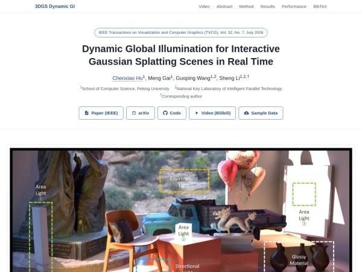

3DGS 與網格混合場景：即時動態全域照明達平均 43 FPS
北京大學研究團隊提出混合機率式光線追蹤與硬體光柵化管線，讓 3D Gaussian Splatting 與多邊形網格共同接收動態間接光；RTX 3090 測試在約 157 萬個 Gaussian、1920×1088 解析度下平均達 43 FPS。

研究 ★★★★☆
完整分析
技術流程
管線以 3D Gaussian 的表面光傳播模型為基礎，結合機率式光線追蹤與硬體光柵器，可計算多次漫反射和一次光澤反射，並讓 3DGS 與網格互相影響照明。
製作影響
燈光、物件及材質可在執行時編輯，支援區域光、方向光與環境光，也能即時調整反照率和粗糙度；這使混合掃描場景不必先烘焙 GI 才能預覽變更。
限制與待驗證
公開版本只支援 Windows，且需要 NVIDIA RTX 30 系列以上 GPU。一般 3DGS 若缺少適合重新打光的 PBR 材質資訊，未必能得到良好結果，因此效能數字不能直接外推到所有掃描資料。
BRIEF｜來源已驗證；證據深度較有限，完整分析會明確區分已知資訊與待驗證事項。